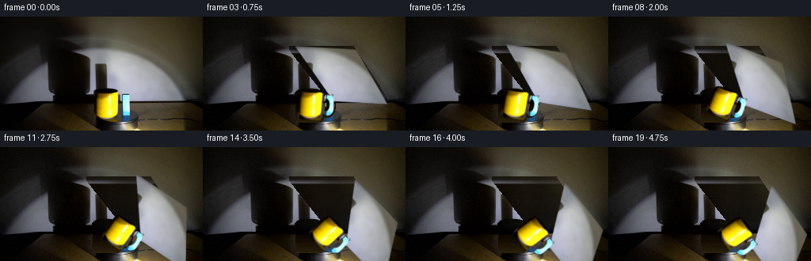
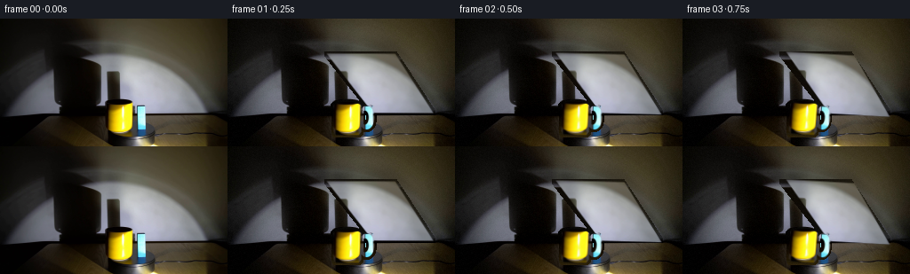
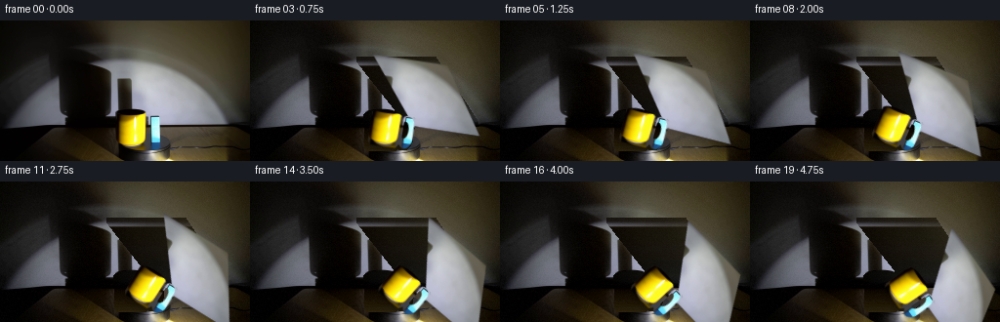
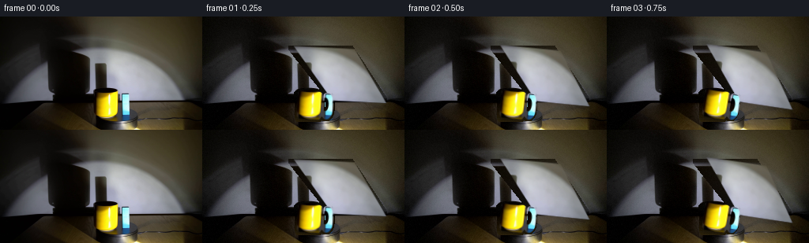

CODING AGENTS AS PIXEL WORLD MODELS
traex/DeepSeek-V4.1-Flash · 0080
点击播放 · 原生 RGB 像素
逐轮保存的候选
回放视频、检查图与代码变化。
每份候选均可单独播放。实际图片检查记录在下方工具轨迹中。
候选 01播放与检查图
点击播放 · 原生 RGB 像素


展开代码变化
--- 上一保存版本
+++ 本次保存版本
@@ -0,0 +1,274 @@
+from pathlib import Path
+
+import cv2
+import numpy as np
+from PIL import Image
+
+import artifact_io
+
+
+ROOT = Path(__file__).resolve().parent
+WIDTH, HEIGHT = 256, 144
+FRAME_COUNT = 20
+FPS = 4
+
+# The turntable is the large, perspective-squashed ellipse in the lower half.
+PIVOT = np.array([151.0, 135.0], dtype=np.float32)
+CLOCKWISE_DEGREES = 55.0
+
+
+def _supersampled_mask(draw_fn, scale=4):
+ mask = Image.new("L", (WIDTH * scale, HEIGHT * scale), 0)
+ draw_fn(mask)
+ return np.asarray(
+ mask.resize((WIDTH, HEIGHT), Image.Resampling.LANCZOS), dtype=np.float32
+ ) / 255.0
+
+
+def make_block_mask():
+ # The blue block's visible face is a large parallelogram. Its left/lower
+ # corner is hidden by the mug in the source frame.
+ polygon = np.array(
+ [[111.0, 39.5], [188.0, 39.5], [231.5, 106.0], [163.5, 106.0]],
+ dtype=np.float32,
+ )
+
+ def draw(mask):
+ canvas = np.array(mask)
+ d = cv2.fillPoly(
+ canvas,
+ [np.rint(polygon * 4).astype(np.int32)],
+ 255,
+ lineType=cv2.LINE_AA,
+ )
+ mask.paste(Image.fromarray(d), (0, 0))
+
+ mask = _supersampled_mask(draw)
+ # Keep the anti-aliased boundary but discard the faint one-pixel halo.
+ return np.clip((mask - 0.025) / 0.95, 0.0, 1.0)
+
+
+def make_mug_mask():
+ # A cylindrical body plus the cyan loop handle. Drawing the mask at 4x
+ # preserves the small highlights and gives clean subpixel motion.
+ body = np.array(
+ [[119.2, 99.0], [150.2, 99.0], [150.2, 127.4],
+ [147.8, 131.0], [121.6, 131.0], [119.2, 127.4]],
+ dtype=np.float32,
+ )
+
+ def draw(mask):
+ canvas = np.array(mask)
+ poly = np.rint(body * 4).astype(np.int32)
+ canvas[:] = cv2.fillPoly(canvas, [poly], 255, lineType=cv2.LINE_AA)
+ canvas[:] = cv2.ellipse(
+ canvas,
+ (int(134.7 * 4), int(99.0 * 4)),
+ (int(15.5 * 4), int(5.0 * 4)),
+ 0,
+ 0,
+ 360,
+ 255,
+ -1,
+ cv2.LINE_AA,
+ )
+ canvas[:] = cv2.ellipse(
+ canvas,
+ (int(134.7 * 4), int(127.0 * 4)),
+ (int(14.7 * 4), int(4.3 * 4)),
+ 0,
+ 0,
+ 180,
+ 255,
+ -1,
+ cv2.LINE_AA,
+ )
+ # Outer handle ring.
+ canvas[:] = cv2.ellipse(
+ canvas,
+ (int(156.4 * 4), int(111.5 * 4)),
+ (int(8.8 * 4), int(13.3 * 4)),
+ 0,
+ 0,
+ 360,
+ 255,
+ -1,
+ cv2.LINE_AA,
+ )
+ mask.paste(Image.fromarray(canvas), (0, 0))
+
+ outer = _supersampled_mask(draw)
+
+ def draw_inner(mask):
+ canvas = np.array(mask)
+ canvas[:] = cv2.ellipse(
+ canvas,
+ (int(154.7 * 4), int(111.5 * 4)),
+ (int(4.1 * 4), int(7.8 * 4)),
+ 0,
+ 0,
+ 360,
+ 255,
+ -1,
+ cv2.LINE_AA,
+ )
+ mask.paste(Image.fromarray(canvas), (0, 0))
+
+ inner = _supersampled_mask(draw_inner)
+ mask = np.maximum(outer - inner, 0.0)
+ # The handle meets the body through a narrow, shaded throat.
+ mask[99:128, 146:153] = np.maximum(mask[99:128, 146:153], outer[99:128, 146:153])
+ return np.clip((mask - 0.02) / 0.96, 0.0, 1.0)
+
+
+def make_background(source, foreground):
+ """Reconstruct the smooth wall and black platform hidden by the objects."""
+ background = source.astype(np.float32).copy()
+ cover = cv2.dilate((foreground > 0.02).astype(np.uint8), np.ones((5, 5), np.uint8))
+ cover = cover > 0
+
+ h, w = source.shape[:2]
+ yy, xx = np.mgrid[0:h, 0:w]
+ rng = np.random.default_rng(80)
+ grain = rng.normal(0.0, 1.55, (h, w, 1))
+
+ for y in range(h):
+ row_free = ~cover[y]
+ if not np.any(row_free):
+ continue
+
+ # Wall colors are inferred from both sides of the moving objects.
+ left_free = np.flatnonzero(row_free & (np.arange(w) < 108))
+ right_free = np.flatnonzero(row_free & (np.arange(w) > 232))
+ if len(left_free):
+ left_color = np.median(source[y, left_free[-20:]], axis=0)
+ else:
+ left_color = np.median(source[y, row_free], axis=0)
+ if len(right_free):
+ right_color = np.median(source[y, right_free[:20]], axis=0)
+ else:
+ right_color = np.median(source[y, row_free], axis=0)
+
+ x0, x1 = 108.0, 232.0
+ t = np.clip((np.arange(w, dtype=np.float32) - x0) / (x1 - x0), 0.0, 1.0)
+ wall_row = left_color[None, :] * (1.0 - t[:, None]) + right_color[None, :] * t[:, None]
+
+ # The lower area is the matte-black turntable rather than the wall.
+ dark_candidates = source[y, (np.arange(w) > 72) & (np.arange(w) < 226) & row_free]
+ if len(dark_candidates):
+ dark_candidates = dark_candidates[dark_candidates.mean(axis=1) < 48]
+ if len(dark_candidates):
+ platform_color = np.median(dark_candidates, axis=0)
+ else:
+ platform_color = np.array([13.0, 10.0, 7.0], dtype=np.float32)
+
+ platform_amount = np.clip((y - 105.0) / 3.0, 0.0, 1.0)
+ row = wall_row * (1.0 - platform_amount) + platform_color[None, :] * platform_amount
+ background[y, cover[y]] = row[cover[y]]
+
+ background += grain
+ return np.clip(background, 0, 255).astype(np.uint8)
+
+
+def clockwise_matrix(angle_deg, pivot):
+ angle = np.deg2rad(angle_deg)
+ c, s = np.cos(angle), np.sin(angle)
+ px, py = float(pivot[0]), float(pivot[1])
+ return np.array(
+ [[c, -s, px - c * px + s * py],
+ [s, c, py - s * px - c * py]],
+ dtype=np.float32,
+ )
+
+
+def warp_rgba(rgb, alpha, matrix):
+ rgba = np.dstack([rgb, np.rint(alpha * 255.0).astype(np.uint8)])
+ warped = cv2.warpAffine(
+ rgba,
+ matrix,
+ (WIDTH, HEIGHT),
+ flags=cv2.INTER_LINEAR,
+ borderMode=cv2.BORDER_CONSTANT,
+ borderValue=(0, 0, 0, 0),
+ )
+ return warped[:, :, :3].astype(np.float32), warped[:, :, 3].astype(np.float32) / 255.0
+
+
+def composite(base, rgb, alpha):
+ out = base.astype(np.float32)
+ a = alpha[:, :, None]
+ return np.clip(rgb * a + out * (1.0 - a), 0, 255).astype(np.uint8)
+
+
+def add_cast_shadow(frame, block_mask, mug_mask, angle):
+ """A soft, oversized wall shadow trailing the spotlighted foreground."""
+ union = np.maximum(block_mask, mug_mask)
+ shadow_source = cv2.GaussianBlur(union, (0, 0), 3.0)
+
+ # Project the silhouette up and to the left, then rotate it with the rig.
+ shadow_matrix = clockwise_matrix(angle * 0.82, PIVOT)
+ shadow_matrix[:, 2] += np.array([-35.0, -18.0], dtype=np.float32)
+ shadow_matrix[0, :2] *= 1.18
+ shadow_matrix[1, :2] *= 1.10
+ shadow = cv2.warpAffine(
+ shadow_source,
+ shadow_matrix,
+ (WIDTH, HEIGHT),
+ flags=cv2.INTER_LINEAR,
+ borderMode=cv2.BORDER_CONSTANT,
+ borderValue=0,
+ )
+ shadow = cv2.GaussianBlur(shadow, (0, 0), 7.0)
+ shadow[106:] *= 0.35
+
+ out = frame.astype(np.float32)
+ amount = (0.30 * shadow)[:, :, None]
+ out *= 1.0 - amount
+ return np.clip(out, 0, 255).astype(np.uint8)
+
+
+def generate():
+ source = np.asarray(Image.open(ROOT / "first_frame.png").convert("RGB"), dtype=np.uint8)
+ if source.shape != (HEIGHT, WIDTH, 3):
+ raise ValueError(f"unexpected first frame shape: {source.shape}")
+
+ block_mask = make_block_mask()
+ mug_mask = make_mug_mask()
+ foreground = np.maximum(block_mask, mug_mask)
+
+ background = make_background(source, foreground)
+
+ # Repair the portion of the block hidden by the mug before the two layers
+ # are separated. This prevents a mug-shaped hole from moving with the block.
+ block_rgb = source.copy()
+ repair = ((block_mask > 0.1) & (mug_mask > 0.05)).astype(np.uint8) * 255
+ repair = cv2.dilate(repair, np.ones((3, 3), np.uint8))
+ block_rgb = cv2.inpaint(block_rgb, repair, 4, cv2.INPAINT_TELEA)
+
+ frames = []
+ for index in range(FRAME_COUNT):
+ if index == 0:
+ frames.append(source.copy())
+ continue
+
+ progress = index / (FRAME_COUNT - 1)
+ # Gentle ease-in/out reads as a real motorized turntable.
+ eased = 0.5 - 0.5 * np.cos(np.pi * progress)
+ angle = CLOCKWISE_DEGREES * eased
+ matrix = clockwise_matrix(angle, PIVOT)
+
+ frame = add_cast_shadow(background, block_mask, mug_mask, angle)
+ block_rgb_w, block_a_w = warp_rgba(block_rgb, block_mask, matrix)
+ mug_rgb_w, mug_a_w = warp_rgba(source, mug_mask, matrix)
+
+ frame = composite(frame, block_rgb_w, block_a_w)
+ frame = composite(frame, mug_rgb_w, mug_a_w)
+ frames.append(frame)
+
+ return np.stack(frames, axis=0)
+
+
+if __name__ == "__main__":
+ frames = generate()
+ artifact_io.save(frames, ROOT)
+ print(f"saved {len(frames)} frames to {ROOT}")
候选 02播放与检查图
点击播放 · 原生 RGB 像素


展开代码变化
--- 上一保存版本
+++ 本次保存版本
@@ -83,11 +83,12 @@
-1,
cv2.LINE_AA,
)
- # Outer handle ring.
- canvas[:] = cv2.ellipse(
- canvas,
- (int(156.4 * 4), int(111.5 * 4)),
- (int(8.8 * 4), int(13.3 * 4)),
+ # Outer handle ring. It reaches almost to the platform, so keep the
+ # lower arc in the moving mask rather than leaving it in the plate.
+ canvas[:] = cv2.ellipse(
+ canvas,
+ (int(156.4 * 4), int(113.7 * 4)),
+ (int(8.8 * 4), int(16.8 * 4)),
0,
0,
360,
@@ -103,8 +104,8 @@
canvas = np.array(mask)
canvas[:] = cv2.ellipse(
canvas,
- (int(154.7 * 4), int(111.5 * 4)),
- (int(4.1 * 4), int(7.8 * 4)),
+ (int(154.7 * 4), int(111.7 * 4)),
+ (int(4.0 * 4), int(8.7 * 4)),
0,
0,
360,
@@ -200,7 +201,7 @@
return np.clip(rgb * a + out * (1.0 - a), 0, 255).astype(np.uint8)
-def add_cast_shadow(frame, block_mask, mug_mask, angle):
+def add_shadows(frame, block_mask, mug_mask, angle):
"""A soft, oversized wall shadow trailing the spotlighted foreground."""
union = np.maximum(block_mask, mug_mask)
shadow_source = cv2.GaussianBlur(union, (0, 0), 3.0)
@@ -222,8 +223,25 @@
shadow[106:] *= 0.35
out = frame.astype(np.float32)
- amount = (0.30 * shadow)[:, :, None]
+ amount = (0.13 * shadow)[:, :, None]
out *= 1.0 - amount
+
+ # A tighter contact shadow makes the moving objects read as resting on
+ # the turntable rather than floating over it.
+ contact = cv2.GaussianBlur(union, (0, 0), 2.0)
+ contact_matrix = clockwise_matrix(angle, PIVOT).copy()
+ contact_matrix[:, 2] += np.array([1.5, 4.5], dtype=np.float32)
+ contact = cv2.warpAffine(
+ contact,
+ contact_matrix,
+ (WIDTH, HEIGHT),
+ flags=cv2.INTER_LINEAR,
+ borderMode=cv2.BORDER_CONSTANT,
+ borderValue=0,
+ )
+ contact = cv2.GaussianBlur(contact, (0, 0), 3.0)
+ contact[:101] = 0.0
+ out *= 1.0 - (0.24 * contact)[:, :, None]
return np.clip(out, 0, 255).astype(np.uint8)
@@ -251,13 +269,12 @@
frames.append(source.copy())
continue
- progress = index / (FRAME_COUNT - 1)
- # Gentle ease-in/out reads as a real motorized turntable.
- eased = 0.5 - 0.5 * np.cos(np.pi * progress)
- angle = CLOCKWISE_DEGREES * eased
+ # Constant angular speed matches a motorized turntable and the fixed
+ # real-time frame cadence.
+ angle = CLOCKWISE_DEGREES * index / (FRAME_COUNT - 1)
matrix = clockwise_matrix(angle, PIVOT)
- frame = add_cast_shadow(background, block_mask, mug_mask, angle)
+ frame = add_shadows(background, block_mask, mug_mask, angle)
block_rgb_w, block_a_w = warp_rgba(block_rgb, block_mask, matrix)
mug_rgb_w, mug_a_w = warp_rgba(source, mug_mask, matrix)
可观测工具轨迹
实际执行的命令与返回图片。
命令 1exit 0
/bin/bash -c "pwd && rg --files -g '"'!*.mp4'"' -g '"'!*.mov'"' | sed -n '1,200p'"
命令 2exit 0
/bin/bash -c "sed -n '1,240p' prompt.txt"
命令 3exit 0
/bin/bash -c "sed -n '1,280p' GENERATION_RULES.md"
命令 4exit 0
/bin/bash -c 'ls -la && file first_frame.png 2>/dev/null && identify first_frame.png 2>/dev/null || true'
命令 5exit 0
/bin/bash -c "sed -n '1,260p' artifact_io.py"
命令 6exit 0
/bin/bash -c "sed -n '1,260p' player_template.html"
命令 7exit 0
/bin/bash -c "python - <<'PY'
from PIL import Image
im=Image.open('first_frame.png').convert('RGB')
print(im.size)
# palette summary
from collections import Counter
c=Counter(im.getdata())
print('unique',len(c))
for rgb,n in c.most_common(25): print(rgb,n)
PY"命令 8exit 0
/bin/bash -c "python - <<'PY' import importlib.util for m in ['numpy','PIL','cv2','scipy','skimage','imageio','matplotlib']: print(m, bool(importlib.util.find_spec(m))) PY"
命令 9exit 0
/bin/bash -c "python - <<'PY'
from PIL import Image
import numpy as np
im=np.array(Image.open('first_frame.png').convert('RGB'))
# coarse 8x8 averages, print RGB hex by blocks
for y in range(0,144,8):
row=[]
for x in range(0,256,8):
b=im[y:y+8,x:x+8].reshape(-1,3).mean(0).astype(int)
row.append('%02x%02x%02x'%tuple(b))
print(f'{y:03d}', ' '.join(row))
PY"命令 10exit 0
/bin/bash -c "python - <<'PY'
from PIL import Image
import numpy as np
im=np.array(Image.open('first_frame.png').convert('RGB')).astype(float)
# downsample 2x2 and print category map at 128x72; chars: Y yellow B blue w bright gray . mid : dark
for y in range(0,144,2):
row=''
for x in range(0,256,2):
r,g,b=im[y:y+2,x:x+2].mean((0,1))
mx=max(r,g,b); mn=min(r,g,b)
if r>70 and g>50 and b<0.55*g and r>1.3*b: c='Y'
elif b>60 and b>r*1.08 and b>g*0.85: c='B'
elif mx>130: c='#'
elif mx>85: c='O'
elif mx>55: c='o'
elif mx>32: c='+'
elif mx>16: c='.'
else: c=' '
row+=c
print(f'{y:3d} {row}')
PY"命令 11exit 1
/bin/bash -c "python - <<'PY'
from PIL import Image
import numpy as np
im=np.array(Image.open('first_frame.png').convert('RGB')).astype(float)
# yellow & blue connected components via cv2 at original res
import cv2
Y=((im[:,:,0]>75)&(im[:,:,1]>50)&(im[:,:,2]<70)&(im[:,:,0]>1.5*im[:,:,2])).astype('uint8')
B=((im[:,:,2]>55)&(im[:,:,2]>1.12*im[:,:,0])&(im[:,:,2]>0.8*im[:,:,1])).astype('uint8')
for name,m in [('Y',Y),('B',B)]:
n,lab,stats,cent=cv2.connectedComponentsWithStats(m,8)
print(name)
for s,c in sorted(zip(stats[1:],cent[1:]), key=lambda z:-z[0,4])[:10]: print(s.tolist(), c.tolist())
PY"命令 12exit 0
/bin/bash -c "python - <<'PY'
from PIL import Image
import numpy as np, cv2
im=np.array(Image.open('first_frame.png').convert('RGB')).astype(float)
Y=((im[:,:,0]>75)&(im[:,:,1]>50)&(im[:,:,2]<70)&(im[:,:,0]>1.5*im[:,:,2])).astype('uint8')
B=((im[:,:,2]>55)&(im[:,:,2]>1.12*im[:,:,0])&(im[:,:,2]>0.8*im[:,:,1])).astype('uint8')
for name,m in [('Y',Y),('B',B)]:
n,lab,stats,cent=cv2.connectedComponentsWithStats(m,8)
print(name)
pairs=sorted([(int(s[4]),s.tolist(),c.tolist()) for s,c in zip(stats[1:],cent[1:])],reverse=True)
for a,s,c in pairs[:12]: print(a,s,c)
PY"命令 13exit 0
/bin/bash -c "python - <<'PY'
from PIL import Image
im=Image.open('first_frame.png').convert('RGB')
# 4 nearest-neighbor magnified quadrants for inspection using standard image transforms
im.resize((1024,576),Image.Resampling.NEAREST).save('.tmp/frame_nearest.png')
# crop mug/block and platform
im.crop((85,65,225,145)).resize((840,480),Image.Resampling.NEAREST).save('.tmp/frame_objects.png')
PY"命令 14exit 0
/bin/bash -c "python - <<'PY'
import cv2, numpy as np
im=cv2.imread('first_frame.png')
g=cv2.cvtColor(im,cv2.COLOR_BGR2GRAY)
for lo,hi in [(20,50),(40,90),(80,150)]:
e=cv2.Canny(g,lo,hi)
lines=cv2.HoughLinesP(e,1,np.pi/180,threshold=20,minLineLength=20,maxLineGap=4)
print('Canny',lo,hi)
if lines is not None:
arr=[]
for l in lines[:,0]:
x1,y1,x2,y2=map(int,l); length=((x2-x1)**2+(y2-y1)**2)**.5
ang=np.degrees(np.arctan2(y2-y1,x2-x1))
arr.append((round(length,1),round(ang,1),(x1,y1,x2,y2)))
for v in sorted(arr,reverse=True)[:25]: print(v)
PY"命令 15exit 0
/bin/bash -c 'command -v chafa || command -v viu || command -v jp2 || command -v img2txt || command -v timg || true'
命令 16exit 0
/bin/bash -c "python - <<'PY'
from PIL import Image
import numpy as np
im=np.array(Image.open('first_frame.png').convert('RGB')).astype(float)
# list horizontal runs of notable colors at key rows
for y in [40,45,50,55,60,65,70,75,80,85,90,95,100,105,108,110,115,120,125,130,135,140,143]:
row=im[y]
# quantize rgb / 32
q=(row//24).astype(int)
# runs >=2
runs=[]; st=0
for x in range(1,256):
if not np.array_equal(q[x],q[x-1]):
if x-st>=2: runs.append((st,x-1,tuple((q[st]*24+12).astype(int))))
st=x
if 256-st>=2:runs.append((st,255,tuple((q[st]*24+12).astype(int))))
print(y, runs[:30])
PY"命令 17exit 1
/bin/bash -c "python - <<'PY'
import cv2,numpy as np
im=cv2.imread('first_frame.png')
g=cv2.cvtColor(im,cv2.COLOR_BGR2GRAY)
# fit dark platform top boundary from strong top surface. Print Sobel vertical edge candidates at each x in likely range
for y in range(88,145,2):
vals=[]
row=im[y]
# changed > 12 from y-4
d=np.abs(row.astype(float)-im[y-4].astype(float)).max(1)
xs=np.where(d>15)[0]
# runs
if len(xs):
# list first 30
vals=xs.tolist()
print(y, vals[:80])
PY"命令 18exit 0
/bin/bash -c "python - <<'PY'
from PIL import Image
import numpy as np
im=np.array(Image.open('first_frame.png').convert('RGB')).astype(float)
# print luminance map 64x36 each 4x4 avg
ramp=' .:-=+*#%@'
for y in range(0,144,4):
s=''
for x in range(0,256,4):
v=im[y:y+4,x:x+4].mean()
i=min(9,int(v/256*10))
s+=ramp[i]
print(f'{y:3d} {s}')
PY"命令 19exit 0
/bin/bash -c "python - <<'PY'
from PIL import Image
import numpy as np, cv2
im=np.array(Image.open('first_frame.png').convert('RGB')).astype(float)
# identify circle-like contour on platform: threshold very dark region > x=60 y>90, run cv2 contours
g=cv2.cvtColor(im.astype('uint8'),cv2.COLOR_RGB2GRAY)
# edge visualize ascii for region x60-240 y88-144 downsample 2
e=cv2.Canny(g,15,40)
for y in range(88,144,2):
s=''
for x in range(60,240,2):
s += '#' if e[y:y+2,x:x+2].max() else ' '
print(f'{y:3d} {s}')
PY"命令 20exit 0
/bin/bash -c "python - <<'PY'
from PIL import Image
import numpy as np
im=np.array(Image.open('first_frame.png').convert('RGB'))
# For each row detect transitions where luminance local jump >20, print meaningful boundary sequences y>=88
lum=im.mean(2)
for y in range(88,144):
# contiguous runs of dark luminance <20
m=lum[y]<20
runs=[]; st=None
for x,v in enumerate(m):
if v and st is None: st=x
if not v and st is not None:
if x-st>=3:runs.append((st,x-1))
st=None
if st is not None and 256-st>=3:runs.append((st,255))
print(y,runs)
PY"命令 21exit 0
/bin/bash -c "python - <<'PY'
from PIL import Image
import numpy as np
im=np.array(Image.open('first_frame.png').convert('RGB')).astype(float)
# yellow non-bright pixels: region crop ascii with hue labels; print 2x2 colors sampled
# use color nearest archetypes classification every 2 px in region x105..225 y90..145
for y in range(90,145,2):
s=''
for x in range(105,225,2):
b=im[y:y+2,x:x+2].mean((0,1)); r,g,bl=b
if r>100 and g>70 and bl<80 and r>1.5*bl: c='Y'
elif bl>55 and bl>r*1.05 and bl>g*.85: c='B'
elif max(b)>115: c='#'
elif max(b)>70:c='O'
elif max(b)>40:c='o'
elif max(b)>22:c='+'
elif max(b)>10:c='.'
else:c=' '
s+=c
print(f'{y:3d} {s}')
PY"命令 22exit 0
/bin/bash -c "python - <<'PY'
from PIL import Image
import numpy as np
im=np.array(Image.open('first_frame.png').convert('RGB'))
# print region x105..225 y90..145 as pixels with quantized values every 1 char for object silhouette
# classify by dominant semantic
for y in range(90,144,1):
s=''
for x in range(100,230,1):
r,g,b=im[y,x]
if r>110 and g>80 and b<80 and r>1.5*b: c='Y'
elif b>65 and b>r*1.1 and b>g*.75: c='B'
elif r>160 and g>160 and b>160: c='#'
elif r+g+b>240: c='O'
elif r+g+b>120: c='o'
elif r+g+b>50: c='+'
elif r+g+b>18: c='.'
else: c=' '
s+=c
print(f'{y:3d} {s}')
PY"命令 23exit 0
/bin/bash -c "python - <<'PY'
from PIL import Image
import numpy as np
im=np.array(Image.open('first_frame.png').convert('RGB'))
# region x115..205 y65..140 every px, map hues based on saturation and value
for y in range(65,140):
s=''
for x in range(115,206):
r,g,b=im[y,x].astype(int)
mx=max(r,g,b); mn=min(r,g,b); sat=mx-mn
if mx>110 and r>g*1.15 and g>b*1.25: c='Y'
elif mx>55 and b>r*1.12 and b>g*.78: c='B'
elif mx>180: c='#'
elif mx>115: c='O'
elif mx>65: c='o'
elif mx>35: c='+'
elif mx>18: c='.'
else:c=' '
s+=c
print(f'{y:3d} {s}')
PY"命令 24exit 0
/bin/bash -c "python - <<'PY'
from PIL import Image
import numpy as np, cv2
im=np.array(Image.open('first_frame.png').convert('RGB')).astype(float)
# Find platform outer dark boundary via threshold < 22 region around x67..235 y88..143
m=(im.mean(2)<22).astype(np.uint8)
# for each row around boundary find rightmost dark x and print
for y in range(88,144):
xs=np.where(m[y])[0]
# choose x>100 and runs
runs=[];st=None
for x in xs:
if st is None: st=prev=x
elif x==prev+1:prev=x
else:
if prev-st>=2:runs.append((st,prev))
st=prev=x
if st is not None and prev-st>=2:runs.append((st,prev))
print(y,runs)
PY"命令 25exit 0
/bin/bash -c "python - <<'PY'
from PIL import Image
import numpy as np
im=np.array(Image.open('first_frame.png').convert('RGB')).astype(float)
# platform candidate: region x67..122 y88..143, sample values and edge x boundary per row
for y in [88,90,92,94,96,98,100,104,108,112,116,120,124,128,132,136,140,143]:
vals=[]
for x in [65,66,67,68,69,70,71,72,74,76,80,90,100,110,115,118,120,122,124]:
vals.append((x,tuple(im[y,x].astype(int))))
print(y,vals)
PY"命令 26exit 1
/bin/bash -c "python - <<'PY'
from PIL import Image
import numpy as np,cv2
im=np.array(Image.open('first_frame.png').convert('RGB')).astype(float)
# strongest blue saturation and strongest yellow saturation stats/coords
b=im[:,:,2]-np.maximum(im[:,:,0],im[:,:,1])
y=im[:,:,0]+im[:,:,1]-2*im[:,:,2]
for name,a in [('blue',b),('yellow',y)]:
print(name, np.percentile(a,[50,75,90,95,99,99.5,99.9]), a.max())
idx=np.argpartition(a.ravel(),-30)[-30:]
coords=np.column_stack(np.unravel_index(idx,a.shape))
for yy,xx in coords[np.argsort(a[yy,xx])[::-1]][:20]: print((int(xx),int(yy)),tuple(im[yy,xx].astype(int)),round(a[yy,xx],1))
PY"命令 27exit 1
/bin/bash -c "python - <<'PY'
from PIL import Image
import numpy as np
im=np.array(Image.open('first_frame.png').convert('RGB')).astype(float)
b=im[:,:,2]-np.maximum(im[:,:,0],im[:,:,1]); y=im[:,:,0]+im[:,:,1]-2*im[:,:,2]
for name,a in [('blue',b),('yellow',y)]:
print(name, np.percentile(a,[50,75,90,95,99,99.5,99.9]), a.max())
idx=np.argpartition(a.ravel(),-30)[-30:]
coords=np.column_stack(np.unravel_index(idx,a.shape))
for yy,xx in coords[np.argsort(a[yy,xx])[::-1]][:20]: print((int(xx),int(yy)),tuple(im[yy,xx].astype(int)),round(a[yy,xx],1))
PY"命令 28exit 0
/bin/bash -c "python - <<'PY'
import cv2,numpy as np
im=cv2.imread('first_frame.png'); g=cv2.cvtColor(im,cv2.COLOR_BGR2GRAY)
for th in [(10,30),(20,50),(30,80),(50,100)]:
e=cv2.Canny(g,*th)
cont,_=cv2.findContours(e,cv2.RETR_LIST,cv2.CHAIN_APPROX_SIMPLE)
print('TH',th,'contours',len(cont))
vals=[]
for c in cont:
if len(c)<15: continue
a=cv2.contourArea(c); x,y,w,h=cv2.boundingRect(c)
if a<80: continue
try:
ell=cv2.fitEllipse(c); (cx,cy),(d1,d2),ang=ell
ratio=max(d1,d2)/max(1,min(d1,d2))
if ratio<3.5:
vals.append((round(a), (x,y,w,h), (round(cx,1),round(cy,1)),(round(d1,1),round(d2,1)),round(ang,1),round(ratio,2)))
except:pass
for v in sorted(vals,reverse=True)[:25]: print(v)
PY"命令 29exit 1
/bin/bash -c "python - <<'PY'
from PIL import Image
import numpy as np, cv2
im=np.array(Image.open('first_frame.png').convert('RGB')).astype(float)
for name,score,th in [('blue',im[:,:,2]-np.maximum(im[:,:,0],im[:,:,1]),8),('yellow',im[:,:,0]+im[:,:,1]-2*im[:,:,2],35)]:
m=(score>th).astype('uint8')
m=cv2.morphologyEx(m,cv2.MORPH_CLOSE,np.ones((3,3),np.uint8))
n,l,stats,cent=cv2.connectedComponentsWithStats(m,8)
print(name)
for s,c in sorted(zip(stats[1:],cent[1:]),key=lambda z:-z[0,4])[:15]:
print(s.tolist(),np.round(c,2).tolist())
PY"命令 30exit 0
/bin/bash -c "python - <<'PY'
from PIL import Image
import numpy as np, cv2
im=np.array(Image.open('first_frame.png').convert('RGB')).astype(float)
for name,score,th in [('blue',im[:,:,2]-np.maximum(im[:,:,0],im[:,:,1]),8),('yellow',im[:,:,0]+im[:,:,1]-2*im[:,:,2],35)]:
m=(score>th).astype('uint8')
m=cv2.morphologyEx(m,cv2.MORPH_CLOSE,np.ones((3,3),np.uint8))
n,l,stats,cent=cv2.connectedComponentsWithStats(m,8)
print(name)
pairs=sorted([(int(s[4]),s.tolist(),c.tolist()) for s,c in zip(stats[1:],cent[1:])],reverse=True)
for a,s,c in pairs[:15]: print(a,s,np.round(c,2).tolist())
PY"命令 31exit 0
/bin/bash -c "python - <<'PY'
from PIL import Image
import numpy as np
from sklearn.cluster import MiniBatchKMeans
im=np.array(Image.open('first_frame.png').convert('RGB'))
# crop broad object area, cluster colors
crop=im[60:140,100:230].reshape(-1,3)
km=MiniBatchKMeans(16,random_state=0,n_init=5).fit(crop)
cc=km.cluster_centers_.astype(int)
counts=np.bincount(km.labels_)
for i in np.argsort(counts)[::-1]: print(counts[i],tuple(cc[i]))
PY"命令 32exit 0
/bin/bash -c "python - <<'PY'
from PIL import Image
import numpy as np
im=np.array(Image.open('first_frame.png').convert('RGB')).astype(int)
# semantic chars in mug region x112..155 y88..138
print(' '+''.join(str(x//10%10) for x in range(112,156)))
print(' '+''.join(str(x%10) for x in range(112,156)))
for y in range(88,139):
s=''
for x in range(112,156):
r,g,b=im[y,x]
if r>180 and g>150 and b<100: c='Y'
elif r>120 and g>95 and b<90 and r>1.4*b: c='y'
elif b>70 and b>r*1.05: c='B'
elif r>180 and g>180 and b>180: c='#'
elif r+g+b>330: c='O'
elif r+g+b>170: c='o'
elif r+g+b>80: c='+'
elif r+g+b>28: c='.'
else: c=' '
s+=c
print(f'{y:3d} {s}')
PY"命令 33exit 0
/bin/bash -c "python - <<'PY'
from PIL import Image
import numpy as np
im=np.array(Image.open('first_frame.png').convert('RGB'))
coords=[(120,100),(135,100),(140,110),(145,120),(150,120),(155,120),(160,120),(165,120),(170,120),(180,120),(200,120),(220,120),(140,80),(160,80),(180,80),(200,80),(220,80),(120,80),(100,80),(80,80),(60,80),(130,130),(150,130),(170,130),(200,130),(220,130),(230,130),(100,130),(50,130)]
for x,y in coords:print((x,y),tuple(im[y,x]))
PY"命令 34exit 0
/bin/bash -c "python - <<'PY'
from PIL import Image
import numpy as np
im=np.array(Image.open('first_frame.png').convert('RGB')).astype(float)
# report minmax mean per 16x16 tiles
for y in range(0,144,16):
vals=[]
for x in range(0,256,16):
t=im[y:y+16,x:x+16]
vals.append(f'{t.mean():.0f}/{t.max():.0f}')
print(y,' '.join(vals))
PY"命令 35exit 0
/bin/bash -c "python - <<'PY'
from PIL import Image
import numpy as np
im=np.array(Image.open('first_frame.png').convert('RGB')).astype(int)
for y in range(85,144):
# run at x around 100 to 125 with average brightness
vals=[]
for x in range(105,126,2): vals.append(int(im[y,x].mean()))
print(y,vals)
PY"命令 36exit 0
/bin/bash -c "python - <<'PY'
from PIL import Image
import numpy as np, cv2
im=np.array(Image.open('first_frame.png').convert('RGB')).astype(float)
# region x118-160 y75-140: find local high red/green low blue, print bbox for each connected component at various thresholds
score=im[:,:,0]+im[:,:,1]-2*im[:,:,2]
for th in [30,50,70,100,150,200]:
m=(score>th).astype('uint8')
n,l,s,c=cv2.connectedComponentsWithStats(m,8)
print('TH',th)
for a,b,cc in sorted([(int(s[i,4]),s[i].tolist(),c[i].tolist()) for i in range(1,n)],reverse=True)[:8]: print(a,b,np.round(cc,1).tolist())
PY"命令 37exit 0
/bin/bash -c "python - <<'PY'
from PIL import Image
import numpy as np
im=np.array(Image.open('first_frame.png').convert('RGB')).astype(int)
# inspect block x155..205 y100..140 classification B=bright blue-gray C=cyan W=gray dark etc
for y in range(100,141):
s=''
for x in range(150,211):
r,g,b=im[y,x]
if b>r+15 and b>g+10 and b>100: c='B'
elif b>r+15 and b>g+10 and b>45:c='b'
elif g>r+10 and b>r+20 and b>120:c='C'
elif r>150 and g>150 and b>150:c='#'
elif r>90 and g>90 and b>90:c='O'
elif r>55 and g>55 and b>55:c='o'
elif r+g+b>75:c='+'
elif r+g+b>27:c='.'
else:c=' '
s+=c
print(f'{y:3d} {s}')
PY"命令 38exit 0
/bin/bash -c "python - <<'PY'
from PIL import Image
import numpy as np
im=np.array(Image.open('first_frame.png').convert('RGB')).astype(int)
# horizontal transitions around block front top edge row 105-110 exact values
for y in [104,105,106,107,108,109,110]:
print('y',y)
for x in range(150,181):
print(x,tuple(im[y,x]),end='; ')
print()
PY"命令 39exit 0
/bin/bash -c "python - <<'PY'
from PIL import Image
import numpy as np
im=np.array(Image.open('first_frame.png').convert('RGB'))
for y in [102,103,104,105,106,107,108,109,110,115,120,125,129,130,131]:
print('y',y)
for x in [150,154,155,158,160,162,163,164,170,180,190,200,210,220,229,230,234]:
print(x,tuple(im[y,x]),end='; ')
print()
PY"命令 40exit 0
/bin/bash -c "python - <<'PY'
from PIL import Image
import numpy as np,cv2
im=np.array(Image.open('first_frame.png').convert('RGB')).astype(float)
score=im[:,:,0]+im[:,:,1]-2*im[:,:,2]
for th in [10,20,30,50,80]:
m=(score>th).astype('uint8'); m[:90]=0;m[135:]=0;m[:,:115]=0;m[:,155:]=0
m=cv2.morphologyEx(m,cv2.MORPH_CLOSE,np.ones((3,3),np.uint8))
n,l,s,c=cv2.connectedComponentsWithStats(m,8)
print('th',th)
for i in range(1,n):
if s[i,4]>10:print(s[i].tolist(),c[i].tolist())
PY"命令 41exit 0
/bin/bash -c "python - <<'PY'
from PIL import Image
import numpy as np
im=np.array(Image.open('first_frame.png').convert('RGB')).astype(int)
# print grayscale values x145..205 y100..140 as symbols based on exact grayscale
for y in range(100,141):
s=''
for x in range(145,211):
r,g,b=im[y,x]; v=(r+g+b)/3
if v>230:c='@'
elif v>190:c='#'
elif v>150:c='*'
elif v>110:c='+'
elif v>80:c='='
elif v>60:c='-'
elif v>40:c=':'
elif v>25:c='.'
elif v>10:c=','
else:c=' '
s+=c
print(f'{y:3d} {s}')
PY"命令 42exit 0
/bin/bash -c "python - <<'PY'
from PIL import Image
import numpy as np
im=np.array(Image.open('first_frame.png').convert('RGB')).astype(float)
# Mug handle: inspect x145..165 y95..130 color and shape categories
for y in range(95,131):
s=''
for x in range(140,166):
r,g,b=im[y,x]
if r>160 and g>120 and b<90: c='Y'
elif b>r+12 and b>g+8 and b>120:c='C'
elif max(r,g,b)>150:c='#'
elif max(r,g,b)>95:c='O'
elif max(r,g,b)>60:c='o'
elif max(r,g,b)>35:c='+'
elif max(r,g,b)>15:c='.'
else:c=' '
s+=c
print(f'{y:3d} {s}')
PY"命令 43exit 0
/bin/bash -c "python - <<'PY'
from PIL import Image
import numpy as np
im=np.array(Image.open('first_frame.png').convert('RGB')).astype(int)
# inspect colors at x=154-165 across y
for y in range(94,131):
print(y, [tuple(im[y,x]) for x in range(152,166)])
PY"命令 44exit 0
/bin/bash -c "python - <<'PY'
from PIL import Image
import numpy as np
im=np.array(Image.open('first_frame.png').convert('RGB')).astype(int)
# detect all pixels where high brightness object top plane (gray >120) and report bbox by x/y
v=im.mean(2)
for th in [80,100,120,140,160]:
m=v>th
ys,xs=np.where(m)
print(th, len(xs), (xs.min(),ys.min(),xs.max(),ys.max()))
# row spans
for y in [40,60,80,95,100,105,110,120,130,140]:
xx=np.where(m[y])[0]
if len(xx):
# runs
runs=[]; st=pr=xx[0]
for x in xx[1:]:
if x==pr+1:pr=x
else:
if pr-st>2:runs.append((int(st),int(pr)))
st=pr=x
if pr-st>2:runs.append((int(st),int(pr)))
print(y,runs[:8])
PY"命令 45exit 0
/bin/bash -c "python - <<'PY'
from PIL import Image
import numpy as np
im=np.array(Image.open('first_frame.png').convert('RGB')).astype(int)
for y in [80,90,95,100,105,110,115,120,125,130,135,140]:
s=''
for x in range(145,236,1):
r,g,b=im[y,x]
# top white-blue >120 max or cyan >180 g
if r>120 and g>120 and b>130:c='#'
elif r>65 and g>65 and b>65:c='o'
elif r+g+b>110:c='+'
elif r+g+b>40:c='.'
else:c=' '
s+=c
print(f'{y:3d} {s}')
PY"命令 46exit 0
/bin/bash -c "python - <<'PY'
from PIL import Image
import numpy as np
im=np.array(Image.open('first_frame.png').convert('RGB')).astype(int)
# For each row x>=145, print run spans of bright object max>120
for y in range(40,144,2):
m=(im[y].max(1)>120)
runs=[];st=None
for x in range(140,256):
if m[x] and st is None:st=x
if not m[x] and st is not None:
if x-st>=2:runs.append((st,x-1))
st=None
if st is not None:runs.append((st,255))
print(y,runs)
PY"命令 47exit 0
/bin/bash -c "python - <<'PY'
from PIL import Image
import numpy as np
im=np.array(Image.open('first_frame.png').convert('RGB')).astype(int)
# right edge of bright object max>100 for each y 40..130
for y in range(40,132,2):
m=im[y].max(1)>100
# choose longest run x>130
runs=[];st=None
for x in range(130,256):
if m[x] and st is None:st=x
if not m[x] and st is not None:
runs.append((st,x-1));st=None
if st:runs.append((st,255))
print(y,runs)
PY"命令 48exit 0
/bin/bash -c "python - <<'PY'
from PIL import Image
import numpy as np
im=np.array(Image.open('first_frame.png').convert('RGB')).astype(int)
# inspect full silhouette in x130..240 y35..132 downsample 2, brightness only
for y in range(35,133,2):
s=''
for x in range(130,240,2):
b=im[y:y+2,x:x+2].mean(0).mean()
if b>200:c='@'
elif b>150:c='#'
elif b>110:c='*'
elif b>80:c='+'
elif b>55:c='='
elif b>35:c='-'
elif b>20:c=':'
elif b>10:c='.'
else:c=' '
s+=c
print(f'{y:3d} {s}')
PY"命令 49exit 0
/bin/bash -c "python - <<'PY'
from PIL import Image
import numpy as np
im=np.array(Image.open('first_frame.png').convert('RGB')).astype(int)
# show block region at 1 char per px, every 1 row, x150..240, but only top surface y=40..108 maybe
for y in range(35,110,2):
s=''
for x in range(130,241,1):
r,g,b=im[y,x]
# blueish grayscale
v=(r+g+b)/3
if b>r+20 and b>g+10:c='B'
elif v>190:c='@'
elif v>145:c='#'
elif v>110:c='*'
elif v>75:c='+'
elif v>45:c='-'
elif v>20:c='.'
else:c=' '
s+=c
print(f'{y:3d} {s}')
PY"命令 50exit 1
/bin/bash -c 'python generate.py'
命令 51exit 0
/bin/bash -c "sed -n '1,130p' generate.py && python generate.py"
命令 52exit 0
/bin/bash -c "python - <<'PY'
from PIL import Image
import numpy as np
src=np.array(Image.open('first_frame.png').convert('RGB'))
f0=np.array(Image.open('frames/00.png').convert('RGB'))
print('frame0_equal',np.array_equal(src,f0),'maxdiff',np.abs(src.astype(int)-f0.astype(int)).max())
a=np.load('pixels.npz')['pixels']
print('pixels',a.shape,a.dtype)
# unpack packed RGB summary per frame
rgb=np.stack([(a>>16)&255,(a>>8)&255,a&255],axis=-1).transpose(2,0,1,3)
for i in range(20):
f=rgb[i]; diff=np.abs(f.astype(int)-rgb[0].astype(int)).mean()
print(i, 'mean',round(float(f.mean()),2),'diff0',round(float(diff),2),'brightbbox',end=' ')
ys,xs=np.where(f.max(2)>145); print((int(xs.min()),int(ys.min()),int(xs.max()),int(ys.max())) if len(xs) else None)
PY"命令 53exit 0
/bin/bash -c "python - <<'PY'
from PIL import Image
import numpy as np
# inspect first frame and generated frames via categorical map x90..245 y30..143
for idx in [0,5,10,15,19]:
im=np.array(Image.open(f'frames/{idx:02d}.png').convert('RGB')).astype(int)
print('\\nFRAME',idx)
for y in range(32,144,3):
s=''
for x in range(90,246,2):
r,g,b=im[y:y+3,x:x+2].mean((0,1))
if r>110 and g>70 and b<100 and r>1.5*b:c='Y'
elif b>r+15 and b>g+8 and b>55:c='B'
elif r+g+b>390:c='#'
elif r+g+b>240:c='O'
elif r+g+b>135:c='o'
elif r+g+b>60:c='+'
elif r+g+b>25:c='.'
else:c=' '
s+=c
print(f'{y:3d} {s}')
PY"命令 54exit 0
/bin/bash -c "python generate.py && python - <<'PY'
from PIL import Image
import numpy as np
src=np.array(Image.open('first_frame.png').convert('RGB'))
f0=np.array(Image.open('frames/00.png').convert('RGB'))
print('frame0_equal',np.array_equal(src,f0))
a=np.load('pixels.npz')['pixels']
print('pixels',a.shape,a.dtype)
print('files')
for p in ['frames/00.png','frames/19.png','inspection.png','transition_check.png','index.html','pixels.npz']:
import os
print(p,os.path.getsize(p))
PY"命令 55exit 0
/bin/bash -c "python - <<'PY'
from PIL import Image
import numpy as np, cv2
from generate import make_block_mask, make_mug_mask
src=np.array(Image.open('first_frame.png').convert('RGB')).astype(float)
bm=make_block_mask(); mm=make_mug_mask()
print('mask block',bm.min(),bm.max(),np.sum(bm>0.5),'mug',mm.min(),mm.max(),np.sum(mm>0.5),'overlap',np.sum((bm>.5)&(mm>.5)))
for i in range(20):
im=np.array(Image.open(f'frames/{i:02d}.png').convert('RGB')).astype(float)
score_y=im[:,:,0]+im[:,:,1]-2*im[:,:,2]
score_b=im[:,:,2]-np.maximum(im[:,:,0],im[:,:,1])
my=(score_y>70).astype('uint8'); mb=(score_b>8).astype('uint8')
my=cv2.morphologyEx(my,cv2.MORPH_CLOSE,np.ones((3,3),np.uint8))
mb=cv2.morphologyEx(mb,cv2.MORPH_CLOSE,np.ones((3,3),np.uint8))
def largest(m):
n,l,s,c=cv2.connectedComponentsWithStats(m,8)
vals=sorted([(int(s[j,4]),s[j].tolist(),c[j].tolist()) for j in range(1,n)],reverse=True)
return vals[0] if vals else (0,None,None)
y=largest(my); b=largest(mb)
print(i,'Y',y[0],y[1],np.round(y[2],1).tolist() if y[2] else None,'B',b[0],b[1],np.round(b[2],1).tolist() if b[2] else None)
PY"命令 56exit 0
/bin/bash -c 'mkdir -p .tmp/candidate1 && cp -r frames pixels.npz inspection.png transition_check.png index.html .tmp/candidate1/'
命令 57exit 0
/bin/bash -c "python - <<'PY'
from PIL import Image
import numpy as np
# crude ASCII of generated frame 19 full 128x72
im=np.array(Image.open('frames/19.png').convert('RGB')).astype(float)
ramp=' .:-=+*#%@'
for y in range(0,144,2):
s=''
for x in range(0,256,2):
v=im[y:y+2,x:x+2].mean()
s+=ramp[min(9,int(v/256*10))]
print(s)
PY"命令 58exit 0
/bin/bash -c "python -m py_compile generate.py && python - <<'PY'
from PIL import Image
import numpy as np, json
from pathlib import Path
frames=sorted(Path('frames').glob('*.png'))
assert len(frames)==20
for p in frames:
im=Image.open(p)
assert im.size==(256,144) and im.mode=='RGB', (p,im.size,im.mode)
a=np.load('pixels.npz')['pixels']
assert a.shape==(144,256,20) and a.dtype==np.uint32
src=np.asarray(Image.open('first_frame.png').convert('RGB'))
f0=np.asarray(Image.open('frames/00.png').convert('RGB'))
assert np.array_equal(src,f0)
html=Path('index.html').read_text()
assert 'const DATA=' in html and 'window.__pixelReady=true' in html
print('validated:',len(frames),'RGB frames,',a.shape,'pixels tensor, frame 00 pixel-identical')
print('artifacts:',', '.join(p.name for p in [Path('pixels.npz'),Path('index.html'),Path('inspection.png'),Path('transition_check.png')] if p.exists()))
PY"命令 59exit 0
/bin/bash -c 'git status --short 2>/dev/null || true'
命令 60exit 0
/bin/bash -c "find . -maxdepth 2 -type f -printf '%p %s bytes\\n' | sort"
保存候选 2 份；完成命令 60 次；可验证图片返回 0 张。原始 API 响应与完整日志保留在本地。